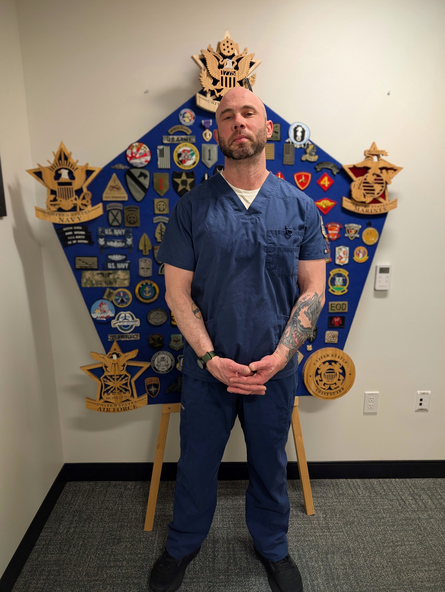

Excellence in
Nursing
Service
Leadership
BSN Student & U.S. Navy Hospital Corpsman (Veteran) Transitioning to a Career as a Registered Nurse with a Focus on High-Acuity, Evidence-Based Patient Care.
(406) 946-1306
Meet Christopher
A dedicated BSN student at Montana State University (MSU) with a clinical foundation built during five years of service as a U.S. Navy Hospital Corpsman. My experience ranges from providing high-stakes emergency interventions with the 2nd Marine Division to managing patient care and complex medication administration in traditional clinical settings.
Philosophy: Driven by a commitment to clinical excellence, finding creative solutions to medical challenges, and delivering compassionate, holistic care that addresses patient's physical, emotional, and spiritual needs.
Mission Statement: My mission is to embody resilience, service, and compassionate leadership as I transition from U.S. Navy Hospital Corpsman to registered nurse. Guided by experience in emergency and high-acuity care, Committed to providing safe, evidence-based practice that addresses the whole person physical, emotional, and spiritual. Strive to create a patient-centered environment where individuals feel respected, heard, and supported during some of life’s most vulnerable moments. Dedicated to continually expanding my clinical knowledge, strengthening my professional judgment, and contributing effectively within collaborative healthcare teams. Above all, I seek to serve with integrity, advocate for those in my care, and deliver excellence in nursing practice every day.
5+ Years
Clinical Exp.
Experience & Education
BSN Student & Clinicals
Montana State University, Jan 2025 - Expected Dec 2027. Gaining comprehensive experience through BSN rotations, geriatric care, comprehensive assessments, MAR review, and ADL support in team-based environments.
Frontier Medication Technician
Dec 2021 - May 2022. Managed safe medication administration for 50+ residents, performed vital sign monitoring and physical assessments, maintained accurate MARs, and served as first responder for on-site medical emergencies.
U.S. Navy Hospital Corpsman
Mar 2013 - Mar 2018. Delivered acute and emergency care in high-pressure environments, including advanced trauma interventions, hemorrhage control, triage, mass casualty response, and education of personnel in BLS and emergency response.
Professional Skills
Professional Domains
Select a professional domain to view semester-based artifact.
Values and Ethics
Artifacts that demonstrate ethical decision-making, integrity, accountability, and professional nursing values.
Knowledge and Research
Coursework and evidence showing growth in research literacy, evidence-based practice, and academic inquiry.
Care Management
Documents reflecting patient-centered care, prioritization, clinical reasoning, and safe care delivery.
Professional Identity
Artifacts that reflect leadership, self-awareness, role development, and growth as a future registered nurse.
{kind=link}